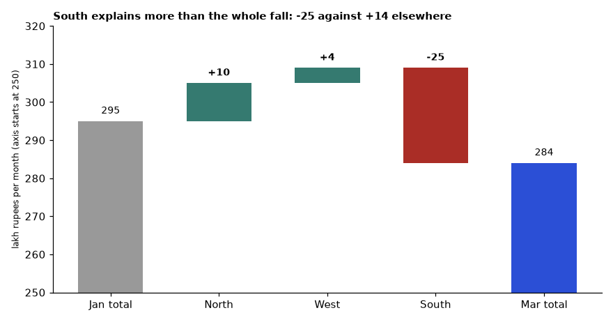
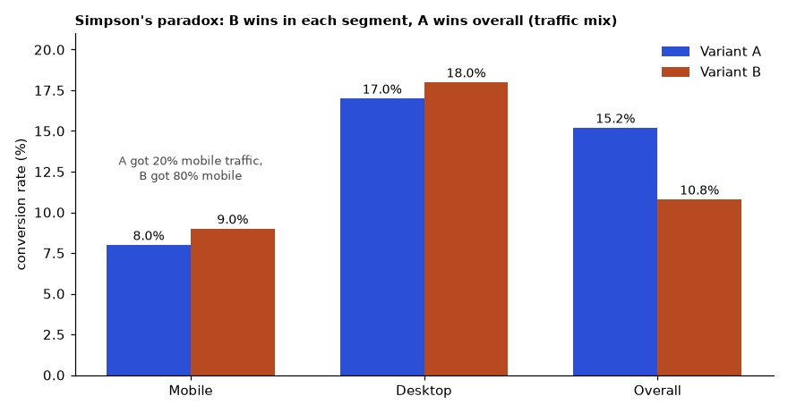
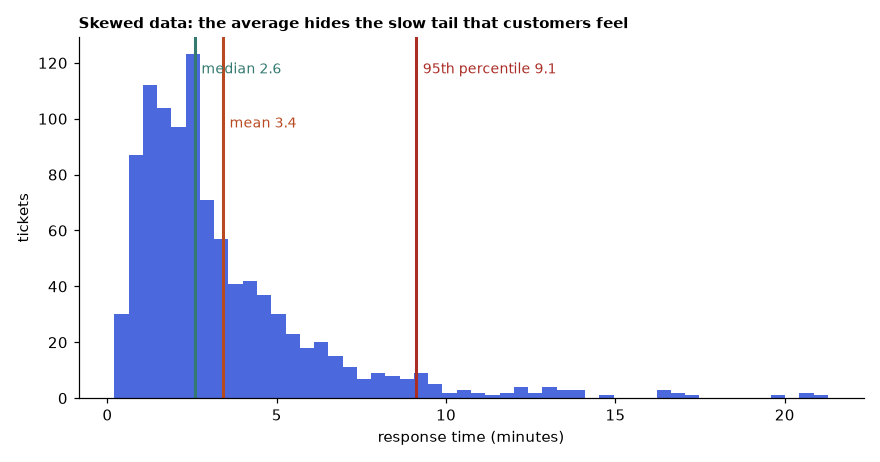
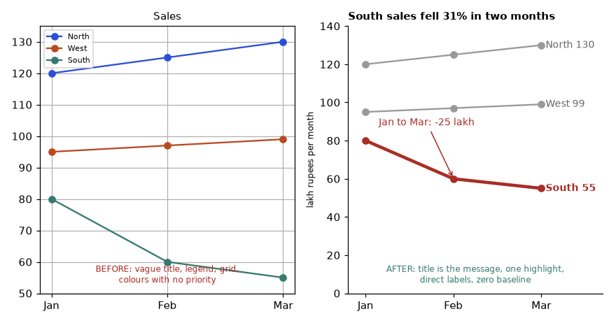
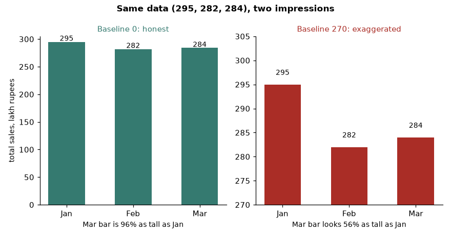
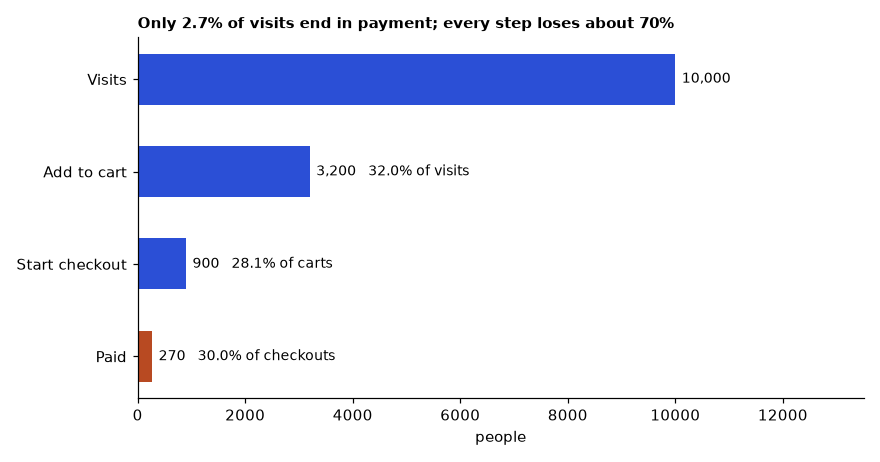
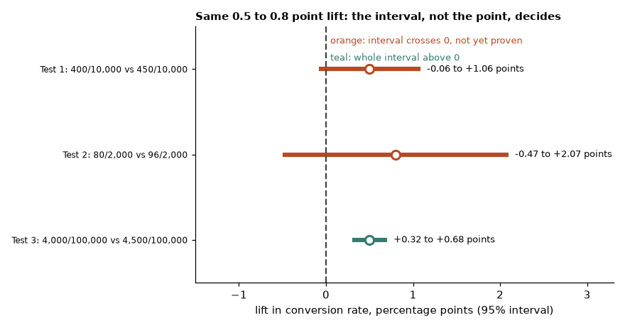
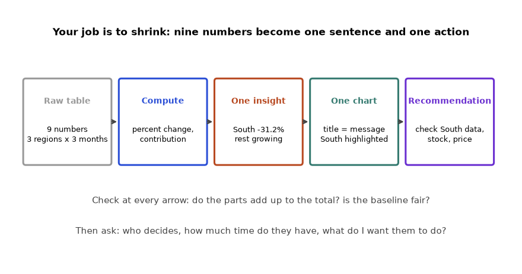
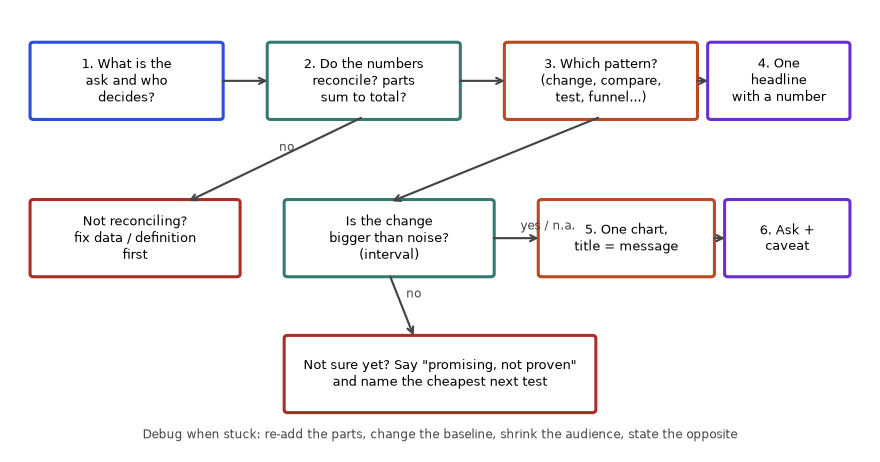

You will often find the right answer and still lose the room. A manager sees 12 charts and asks "so what?". This chapter teaches you to build a short story around your data: who is listening, what the one headline is, which chart shows it, and what you recommend. By the end you will be able to take a messy table, find the single insight, show it in one clean chart, and present it in five minutes with answers ready for the questions that usually follow. We use one running example: monthly sales by region for a company with three regions, in lakh rupees (1 lakh = 100,000).
| Word | Meaning |
|---|---|
| Insight | A finding that can change a decision (not just a fact) |
| Headline | The one-sentence version of the insight |
| Takeaway | The message the audience should remember |
| Clutter | Anything on a chart that does not help the message (extra gridlines, 3D, many colours) |
Monthly sales (lakh rupees):
| Month | North | West | South | Total |
|---|---|---|---|---|
| Jan | 120 | 95 | 80 | 295 |
| Feb | 125 | 97 | 60 | 282 |
| Mar | 130 | 99 | 55 | 284 |
Problem 5.1.1 Find the headline insight from the table.
| Formula | change % = (new - old) / old x 100 |
|---|---|
| Plug in | Total: (284 - 295) / 295; North: (130 - 120) / 120; West: (99 - 95) / 95; South: (55 - 80) / 80 |
| Compute | Total = -11 / 295 = -3.7%. North = +8.3%. West = +4.2%. South = -25 / 80 = -31.2%. (Run in Python, the same values print.) |
| Answer | Total sales fell 3.7% from January to March, but only because South fell 31.2%. North and West are growing. Headline: "Sales are down 3.7% and the whole decline is in the South region, which lost 25 lakh per month." |
| Check | North + West gained 10 + 4 = 14 lakh. South lost 25 lakh. Net = 14 - 25 = -11 lakh, which equals 284 - 295 = -11. The story adds up. |
| Why it matters | In plain words: the problem is not "sales", it is "one region". That changes the action from a company-wide discount to a South investigation. |
Problem 5.1.2 Write the recommendation and next step for the South drop, given you do not yet know the cause.
| Step 1 | Say what you know: South lost 25 lakh per month (31.2%). |
|---|---|
| Step 2 | Say what you do not know: the cause (price, stock, competitor, data error?). |
| Step 3 | Recommend the cheapest next test: check the South data for a data-loading problem first, then stock-outs, then price changes. |
| Answer | "Recommendation: before any discount, spend one week to check South for (1) missing data, (2) stock-outs, (3) price changes. I will report back on Friday 14 November." |
| Check | The recommendation names an owner (I), a deadline and a cheap order of checks. It does not claim a cause we cannot prove. |
| Why it matters | Honest, small next steps beat a confident wrong answer. |
Table of 9 numbers
|
find ONE insight -> "South down 31.2%, rest growing"
|
one chart, one message
|
recommendation + next stepRead it top to bottom: your work is to shrink, not to expand. A nine-number table becomes one sentence.
| Story part | Example | Where it appears in the job |
|---|---|---|
| Audience | Sales head, 10 minutes, non-technical | Monday business review |
| Headline | "South lost 25 lakh/month" | Slide title, email subject |
| Evidence | Chart of regions over 3 months | Dashboard page |
| Recommendation | Check data and stock in South | Action item in minutes |
Analysts spend half their time on this skill. Data scientists must "sell" model results. Data engineers use it when they report pipeline reliability to managers. Chapter 3 gave you the speaking side; Chapter 4 the written side.
Check yourself
Write the message as the chart title, as a full sentence: "South sales fell 31% in two months" instead of "Sales by region". Then choose the chart that makes that message easiest.
| Question | Use | Avoid |
|---|---|---|
| How does one thing change over time? | Line chart | Pie charts |
| Compare a few categories | Bar chart (sorted, horizontal if long labels) | 3D bars |
| Parts of a whole, 2 to 4 parts | Stacked bar or a simple bar of shares | Pie with 8 slices |
| Relationship between two numbers | Scatter plot | Dual axes (confusing) |
| Distribution (for example response times) | Histogram or box plot | Only the average |
| Funnel stages | Horizontal bars with percentages | Tables only |
| Exact values needed | Table | Chart |
| Word | Meaning |
|---|---|
| Axis | The horizontal (x) or vertical (y) line with numbers |
| Legend | The key that explains colours |
| Annotation | A short text on the chart pointing at the key point |
| Truncated axis | An axis that starts above zero and can make small changes look huge |
Problem 5.2.1 Why does a bar chart that starts at 270 instead of 0 mislead? Use the totals 295, 282, 284.
| Formula | apparent ratio of bar heights = (value - baseline) / (other - baseline) |
|---|---|
| Plug in | Baseline 0: 284 / 295. Baseline 270: (284 - 270) / (295 - 270) = 14 / 25. |
| Compute | 284 / 295 = 0.963 (the bars look 96% as tall). 14 / 25 = 0.56 (the bars look only 56% as tall). |
| Answer | With a zero baseline, March is 96% as tall as January, which is true (a 3.7% fall). With a baseline of 270, March looks 56% as tall as January, as if sales nearly halved. |
| Check | The true change is -3.7%. A chart showing -44% (1 - 0.56) is a visual lie. |
| Why it matters | A manager who feels tricked will not trust your next chart. |
Problem 5.2.2 Choose a chart for each message and say why: (a) "South fell while North and West grew over 3 months", (b) "Our funnel loses most people between visit and add-to-cart: of 10,000 visits, 3,200 add to cart, 900 start checkout, 270 pay".
| Step 1 | (a) Time plus 3 categories: a line chart with 3 lines, South in a strong colour, others grey, and direct labels. |
|---|---|
| Step 2 | (b) Funnel stages: horizontal bars. Compute step rates: 3,200 / 10,000 = 32.0%; 900 / 3,200 = 28.1%; 270 / 900 = 30.0%; overall 270 / 10,000 = 2.7%. |
| Step 3 | Look at the rates. The step losses are similar (about 30% continue at each step), so the first-line claim "most are lost between visit and cart" is not special: each step loses about 70%. |
| Answer | (a) line chart with South highlighted. (b) horizontal bars with step rates; the message should be corrected to "Only 2.7% of visits end in payment; each step loses about 70% of the people". |
| Check | 0.32 x 0.281 x 0.30 = 0.027. Matches 2.7%. |
| Why it matters | The data corrected the first idea. If you had written the story before computing, you would have said something false. |
Bad chart Good chart
Title: "Sales" Title: "South sales fell 31% in 2 months"
3D colourful bars, legend Lines: South red, others grey, labelled
Axis from 270 (hidden) Axis from 0, unit: lakh rupees / month
Gridlines everywhere No gridlines; one annotation "Jan -> Mar: -25"Read left to right. The right chart takes about 3 seconds because the eye goes only to the red line.
Dashboard tools (Power BI, Tableau, Metabase, plain matplotlib) all let you break these rules. Your discipline matters more than the tool. Books to read: Storytelling with Data (Knaflic) and Good Charts (Berinato).
Check yourself
Headline: Sales down 3.7% (Jan to Mar); all of the decline is South (-31%).
Evidence: - North +8.3%, West +4.2%
- South 80 -> 55 lakh/month (-25 lakh)
- Decline began in February
Recommendation: One-week check of South: data load, stock, price.
Risk: If not fixed, South loss of 25 lakh/month = 300 lakh/year.
Ask / next: Approve one analyst for one week. Report on Friday 14 Nov.Check the risk number: 25 x 12 = 300 lakh per year (3 crore, since 100 lakh = 1 crore).
| Question type | What to do |
|---|---|
| "How did you get this number?" | Show the definition and the source table in the appendix |
| "Is this significant or noise?" | State the sample size and the uncertainty, honestly |
| "What if it is a data error?" | Say what you checked (row counts, duplicates); say what you could not check |
| "Why not do X?" | Say what you considered and why you ranked it lower |
| A question you cannot answer | "I do not know yet. I will check and reply by tomorrow." |
Prepare an appendix with definitions, data sources and 2 backup charts. Prepare answers for the 3 hardest questions before the meeting.
Use the plan from Chapter 3: problem 45 s, approach 60 s, result 90 s, recommendation 45 s, questions 60 s. Say the headline in the first 15 seconds and again at the end.
Problem 5.3.1 An A/B test: control 10,000 users, 400 converted. Variant 10,000 users, 450 converted. Write the headline, and state what you must still check.
| Formula | conversion rate = converted / users |
|---|---|
| Plug in | Control 400 / 10,000; Variant 450 / 10,000 |
| Compute | Control 4.0%, variant 4.5%. Difference = 0.5 percentage points. Relative lift = 0.5 / 4.0 = 12.5%. |
| Answer | "Variant B converted at 4.5% against 4.0%: a lift of 0.5 percentage points (12.5% relative)." You must still check whether the difference is bigger than random noise (a significance test, see the learner's statistics chapters) and the sample size. |
| Check | 4.0% x 1.125 = 4.5%. Correct. A quick estimate of noise: the standard error of the difference is about sqrt(0.04 x 0.96 / 10000 + 0.045 x 0.955 / 10000) = sqrt(0.00000384 + 0.0000042975) = sqrt(0.0000081375) = 0.002853, so about 0.29 percentage points. The 0.5 point lift is about 1.75 standard errors: promising but not conclusive at the usual 95% level (which needs about 1.96). |
| Why it matters | In plain words: "it looks better, but the evidence is not yet strong." Saying this honestly is part of good storytelling. |
Problem 5.3.2 A director asks, "Could the South drop be a data error?" Write the reply.
| Step 1 | Restate: "You are asking if South numbers could be wrong in the data." |
|---|---|
| Step 2 | Say what you checked: "I compared row counts for South: January 41,200 orders, March 28,900 orders; no missing days; no duplicate order ids." |
| Step 3 | Say what is unchecked: "I have not yet compared with the finance ledger." |
| Step 4 | Promise: "I will compare with finance by Thursday." |
| Answer | A four-sentence reply that separates checked from unchecked. |
| Check | 28,900 / 41,200 = 0.70, a 30% fall in orders, close to the 31% fall in sales, which supports a real drop in orders and not a pricing artefact (these order counts are made-up illustration numbers, so replace them with your own). |
| Why it matters | Knowing what you checked builds trust even when you cannot answer fully. |
Appendix backup: definitions | data sources | 2 backup charts | checks done
Main story: headline -> evidence -> recommendation -> next step
Q&A: pause -> restate -> brief answer -> honest "not yet" if neededStakeholders care about decisions and risk. You will often be asked "what should we do?". Always have a recommendation, even a small one.
Check yourself
This section walks one story from raw numbers to a one-page summary, so you can copy the steps. The numbers are made up.
Problem 5.4.1 Data: monthly active users 120,000 in March and 138,000 in June; sign-ups 30,000 and 31,000; 30-day retention of new users 40% in March and 31% in June. Write the headline, evidence and recommendation.
| Compute | Active users: (138,000 - 120,000) / 120,000 = 15%. Sign-ups: 1,000 / 30,000 = 3.3%. Retention: 31 - 40 = -9 percentage points; relative fall 9 / 40 = 22.5%. |
|---|---|
| Find the story | Growth is real, but new users stay less. Retained new users: March 12,000 (30,000 x 0.40); June 9,610 (31,000 x 0.31). |
| Headline | "Active users grew 15%, but fewer new users stay: 30-day retention fell from 40% to 31%." |
| Evidence | One chart of retention by month (line), with the two end points labelled; one sentence that retained new users fell from 12,000 to 9,610, down 20%. |
| Recommendation | "Run a two-week onboarding test on new sign-ups; target 36% retention; decide on 1 July." |
| Check | (12,000 - 9,610) / 12,000 = 0.199, about 20%. Yes. |
| Block | Content | Length |
|---|---|---|
| Headline | The verdict with two numbers | 1 sentence |
| Evidence | One chart plus one table of 3 rows | 1 chart |
| So what | Why it matters in money or users | 2 lines |
| Ask | Decision, owner, date | 2 lines |
| Caveat | One limit in the data | 1 line |
Problem 5.4.2 A manager asks, "Is 9 points a big drop?" Answer in one sentence with the context.
| Answer | "Yes: it is a fall from 40% to 31%, which means about 2 in 10 fewer new users stay, and it came in 3 months." |
|---|---|
| Check | Relative fall 22.5%, about 2 in 10. Yes. |
| Why it matters | Percentage points and percent differ. Always say which. |
Check yourself
Most failed presentations do not fail because of design. They fail because of arithmetic and vocabulary: someone says "up 10%" when they mean 10 points, or averages two averages, or compares a big region with a small one as if they were the same size. Before charts and slides, you need a small set of words and a small set of calculations that you never get wrong. This section builds them from nothing. Everything later in the chapter uses them.
| Word | Plain meaning | Tiny example |
|---|---|---|
| Absolute change | new minus old, in the original unit | 80 to 55 lakh is -25 lakh |
| Percent change (relative change) | absolute change divided by the old value, times 100 | -25 / 80 = -31.25% |
| Percentage point | the gap between two percentages | 40% to 31% is -9 points |
| Baseline | the old value you compare against; it is the denominator | 80 in the line above |
| Rate | a count divided by the number of chances | 450 converted / 10,000 users = 4.5% |
| Share | a part divided by the whole | North 130 / total 284 = 45.8% |
| Contribution | how much of the total change one part explains | South -25 of total -11 |
| Weighted average | an average where bigger groups count more | see Section 5.6 |
| Mean, median | mean: sum divided by count; median: the middle value when sorted | 2, 3, 100: mean 35, median 3 |
| Percentile (p95) | the value below which 95% of the data sits | 95% of tickets close within this many minutes |
| Noise | random variation that would exist even if nothing changed | two identical emails never get identical clicks |
| Standard error (SE) | the typical size of the noise in an estimate | 0.29 points for the A/B test in 5.3.1 |
| Confidence interval | a range that is likely to contain the true value | lift of +0.5 points, range -0.06 to +1.06 |
| Segment | a slice of users or orders (region, device, new vs returning) | mobile users |
| KPI | a number the business has agreed to track | monthly sales, conversion rate |
A percentage is already a ratio. When a ratio moves, there are two honest ways to describe the move. The point change subtracts: 4% to 3% is minus 1 point. The relative change divides by the old value: -1 / 4 = -25%. Both are true; they answer different questions. Points tell you how far a rate moved. Relative change tells you how big the move is compared with where you started. A move from 0.2% to 0.4% is only 0.2 points, but it is a doubling (+100%). Use points when the audience thinks in the rate itself (conversion, churn, retention), and add relative change when you want to convey scale. Always write the unit word: "points" or "percent".
def pct_change(old, new):
"""Relative change in percent. Returns None when old is 0 (undefined)."""
if old == 0:
return None
return (new - old) / old * 100
print(round(pct_change(80, 55), 1))
print(round(pct_change(55, 80), 1))
print(pct_change(0, 12))
print(round(pct_change(-20, -10), 1))-31.2
45.5
None
-50.0Line by line:
def pct_change(old, new) wraps the formula in a function so you write it once and never retype it wrongly.if old == 0: dividing by zero is impossible, and "up from nothing" has no percentage. Returning None forces you to describe it in words ("first sales ever").(new - old) / old * 100 is the formula: change divided by the baseline, times 100 to make it a percent.-31.2: 80 to 55. The exact value is -31.25, which Python's round shows as -31.2 because 31.25 cannot be stored exactly in binary. Say "about 31%" aloud.45.5: going back from 55 to 80 is +45.5%, not +31.2%. A fall of 31% does not need a 31% rise to recover, because the baseline changed. This is the most common arithmetic surprise.None: the guard works.-50.0: a loss that shrinks from -20 to -10 is an improvement, yet the formula says -50%. With a negative baseline, relative change flips its meaning. Report the absolute change ("the loss halved, from 20 to 10 lakh") instead.Problem 5.5.1 Conversion moves from 3.0% to 3.6%. Write the change two correct ways and say which one you would lead with for a product manager.
| Idea | Subtract for points; divide by the old value for relative change. |
|---|---|
| Points | 3.6 - 3.0 = 0.6 points. |
| Relative | 0.6 / 3.0 = 0.20, so +20%. |
| Answer | "Conversion rose 0.6 points, from 3.0% to 3.6%, a 20% relative lift." Lead with the points and the two end values (the manager knows the metric as a rate); add the 20% to show it is a big lift for a conversion metric. |
| Check | 3.0 x 1.20 = 3.6. Correct. |
Problem 5.5.2 A price rises 10% and then falls 10%. Is it back to where it started? Start at 100.
| Step 1 | After the rise: 100 x 1.10 = 110. |
|---|---|
| Step 2 | After the fall: 110 x 0.90 = 99. |
| Step 3 | Net change = (99 - 100) / 100 = -1%. To get back to 100 from 110 you need a fall of 10 / 110 = 9.09%. |
| Answer | No. It ends 1% below the start, because the 10% fall is taken from a bigger base (110). |
| Meaning | Percent changes multiply, they do not add. Two changes of +a and +b give (1+a)(1+b) - 1, not a + b. |
Problem 5.5.3 Monthly churn falls from 4% to 3% across 50,000 customers. Write the sentence for a CEO, including how many customers it saves.
| Lost before | 50,000 x 0.04 = 2,000 customers per month. |
|---|---|
| Lost after | 50,000 x 0.03 = 1,500 customers per month. |
| Points and relative | 4 - 3 = 1 point; 1 / 4 = 25% relative. |
| Answer | "Monthly churn fell by 1 point, from 4% to 3%: 500 fewer customers lost every month, a 25% reduction in losses." |
| Check | 2,000 - 1,500 = 500, and 500 / 2,000 = 25%. The count, the points and the relative figure agree. |
Section 5.1 gave you the storyline. This section gives you the calculations that feed it. There are five, and together they answer most business questions: how much did it change (Section 5.5), where did the change come from (contribution), what is the right overall number (weighted average), how fast does it grow (index and growth rate), and is the overall picture hiding a different story inside the groups (Simpson's paradox). The sixth idea, choosing between mean and median, finishes the section.
Take the total change and split it across the parts so the pieces add back to the total. The contribution of a part, in points of the total's percent change, is: part change / old total x 100. The contributions always add to the total percent change. This is the calculation behind a "waterfall" chart and behind headlines like "all of the decline is South".
import pandas as pd
sales = pd.DataFrame({"region": ["North", "West", "South"],
"Jan": [120, 95, 80],
"Mar": [130, 99, 55]}).set_index("region")
sales["change"] = sales["Mar"] - sales["Jan"]
sales["pct_change"] = (sales["change"] / sales["Jan"] * 100).round(1)
jan_total = sales["Jan"].sum()
sales["contribution_pts"] = (sales["change"] / jan_total * 100).round(1)
print(sales)
print("total change:", sales["change"].sum(), "lakh")
print("total pct change:", round(sales["change"].sum() / jan_total * 100, 1))
print("contributions add to:", round(sales["contribution_pts"].sum(), 1)) Jan Mar change pct_change contribution_pts
region
North 120 130 10 8.3 3.4
West 95 99 4 4.2 1.4
South 80 55 -25 -31.2 -8.5
total change: -11 lakh
total pct change: -3.7
contributions add to: -3.7Line by line:
pd.DataFrame({...}).set_index("region") builds the running-example table with regions as row labels, so later lines can say sales["Jan"] for a whole column.sales["change"] = Mar - Jan is the absolute change per row, computed for all rows at once (no loop).pct_change divides each row's change by its own January value: each region against its own baseline.jan_total = sales["Jan"].sum() is the single baseline (295) shared by all contributions.contribution_pts divides each row's change by the shared total, not the row's own January value. That is the difference between a region's growth rate and its weight in the total story.
How to read it: Start at the grey bar (295). Walk right: North adds 10, West adds 4, then the red South bar takes away 25. You land on 284. The red bar is taller than the two teal bars together, which is the whole story: one region outweighs the others combined.
Problem 5.6.1 Q1 revenue by product, in lakh: A 200 to 240, B 150 to 135, C 150 to 120. Find each contribution and write the headline.
| Totals | Old = 200 + 150 + 150 = 500. New = 240 + 135 + 120 = 495. Change = -5 lakh = -1.0%. |
|---|---|
| Contributions | A: +40 / 500 = +8.0 points. B: -15 / 500 = -3.0 points. C: -30 / 500 = -6.0 points. |
| Check | 8.0 - 3.0 - 6.0 = -1.0 points. Matches -1.0%. |
| Answer | "Revenue is flat (-1.0%) only because A's growth (+40 lakh) hides losses in C (-30) and B (-15)." A flat total is a different story from a flat business. |
| Meaning | Always decompose a flat total: two big opposite moves can cancel exactly. |
If three regions have conversion rates of 2%, 10% and 20%, the average of the rates is 10.67%. But if almost all the traffic comes from the 2% region, the company converts nowhere near 10.67%. The correct overall rate is total converted divided by total visits, which is the average of the rates weighted by visits.
import pandas as pd
r = pd.DataFrame({"region": ["A", "B", "C"],
"visits": [9000, 800, 200],
"conv_rate": [0.02, 0.10, 0.20]})
simple = r["conv_rate"].mean()
converted = r["visits"] * r["conv_rate"]
weighted = converted.sum() / r["visits"].sum()
print("converted per region:", converted.tolist())
print(f"simple average of rates: {simple:.2%}")
print(f"weighted (correct) overall: {weighted:.2%}")converted per region: [180.0, 80.0, 40.0]
simple average of rates: 10.67%
weighted (correct) overall: 3.00%Line by line:
r["conv_rate"].mean() treats the three regions as equal in size. It is the wrong average here.visits * conv_rate turns each rate back into a count of conversions: 180, 80, 40.converted.sum() / visits.sum() = 300 / 10,000 = 3.00%, the rate the company really achieved.Problem 5.6.2 Store 1: 4 complaints per 100 orders. Store 2: 10 per 100 orders. Store 1 has 900 orders, Store 2 has 100. What is the overall complaint rate?
| Counts | Store 1: 900 x 0.04 = 36. Store 2: 100 x 0.10 = 10. |
|---|---|
| Total | 46 complaints / 1,000 orders = 4.6%. |
| Wrong way | (4% + 10%) / 2 = 7%. |
| Answer | 4.6 per 100 orders. |
| Check | 4.6 lies between 4 and 10 and is close to 4, because Store 1 has 90% of the orders: 0.9 x 4 + 0.1 x 10 = 4.6. Yes. |
When you compare series of different sizes (a 10-crore product and a 1-crore product), put them on the same footing by setting the first value to 100. A value of 130 then means "30% above the start". For growth over several periods, use the compound rate, (last / first) ** (1 / periods) - 1, not the average of yearly growth numbers.
values = [100, 150, 75] # yearly revenue: up 50%, then down 50%
index = [round(v / values[0] * 100) for v in values]
growth = [(b - a) / a * 100 for a, b in zip(values, values[1:])]
average_growth = sum(growth) / len(growth)
periods = len(values) - 1
cagr = ((values[-1] / values[0]) ** (1 / periods) - 1) * 100
print("index:", index)
print("yearly growth %:", growth)
print("average of yearly growth:", average_growth)
print("compound annual growth:", round(cagr, 1))index: [100, 150, 75]
yearly growth %: [50.0, -50.0]
average of yearly growth: 0.0
compound annual growth: -13.4Line by line:
values is a three-point series: 100, then 150, then 75.index divides each value by the first and multiplies by 100: 100, 150, 75. The index makes the first point the reference.growth pairs each year with the next (zip(values, values[1:])) and applies the percent-change formula: +50 and -50.average_growth is the naive mean: 0.0. It claims the business did not change.cagr (compound annual growth rate) takes the final-to-first ratio 0.75, raises it to 1/2 (the square root, 0.866) and subtracts 1: -13.4% a year. This matches reality: revenue ended 25% lower, which is two years of about -13.4%.Problem 5.6.3 Revenue was 100 crore, then 110, then 121. Compute the annual growth rate and project next year.
| Formula | growth = (last / first) ** (1 / periods) - 1, with periods = 2. |
|---|---|
| Compute | 121 / 100 = 1.21; the square root of 1.21 is 1.10; 1.10 - 1 = 0.10. |
| Answer | 10% a year. Next year at the same pace: 121 x 1.10 = 133.1 crore. |
| Check | Each year 110 / 100 = 1.10 and 121 / 110 = 1.10, so the rate is steady. Say "if the trend continues", because a projection is an assumption, not a fact. |
Sometimes variant B beats variant A inside every segment and yet loses overall. The cause is a different mix: B was shown mostly to the segment that converts poorly. If you only look at the total you will reach the wrong decision.
import pandas as pd
d = pd.DataFrame({"variant": ["A", "A", "B", "B"],
"segment": ["mobile", "desktop", "mobile", "desktop"],
"users": [200, 800, 800, 200],
"converted": [16, 136, 72, 36]})
d["rate_pct"] = d["converted"] / d["users"] * 100
print(d)
total = d.groupby("variant")[["users", "converted"]].sum()
total["rate_pct"] = total["converted"] / total["users"] * 100
print(total) variant segment users converted rate_pct
0 A mobile 200 16 8.0
1 A desktop 800 136 17.0
2 B mobile 800 72 9.0
3 B desktop 200 36 18.0
users converted rate_pct
variant
A 1000 152 15.2
B 1000 108 10.8Line by line:
rate_pct is the per-row conversion rate. Mobile: A 8.0%, B 9.0%. Desktop: A 17.0%, B 18.0%. B wins both rows.groupby("variant")[[...]].sum() adds users and conversions across segments for each variant.
How to read it: Compare bars within a group first (Mobile, Desktop), then look at Overall. The reversal is caused by traffic mix, shown in the note on the chart. The fix is to compare like with like: segment-level rates, or a test that randomly splits traffic so both variants get the same mix.
Problem 5.6.4 Using the table above, what do you tell the PM who wants to ship A because it has 15.2% against 10.8%?
| Step 1 | Check the mix: A: 20% mobile / 80% desktop. B: 80% mobile / 20% desktop. |
|---|---|
| Step 2 | Compare within segments: mobile 9.0% vs 8.0% (+1.0 point for B); desktop 18.0% vs 17.0% (+1.0 point for B). |
| Step 3 | Re-weight B to A's mix: 0.2 x 9.0 + 0.8 x 18.0 = 1.8 + 14.4 = 16.2%. Against A's 15.2%. |
| Answer | "The headline totals are misleading. Per segment, B is 1 point better; on the same traffic mix B would convert 16.2% against 15.2%. The gap in totals is because B received more mobile traffic. Do not ship A on this evidence; fix the traffic split and retest." |
| Check | Mix-adjusted B (16.2%) beats A (15.2%), consistent with B winning in both rows. |
The mean adds everything and divides, so a few huge values pull it up. The median is the middle value after sorting, so extremes do not move it. Response times, order values, salaries and session lengths are usually skewed (a long tail of large values). For these, report the median for the typical case and a high percentile (p90 or p95) for the bad case.
import numpy as np
rng = np.random.default_rng(7)
minutes = rng.lognormal(mean=1.0, sigma=0.8, size=1000) # 1000 skewed ticket times
print(f"mean {minutes.mean():.2f}")
print(f"median {np.median(minutes):.2f}")
print(f"p95 {np.percentile(minutes, 95):.2f}")
print(f"share slower than the mean: {(minutes > minutes.mean()).mean():.1%}")mean 3.41
median 2.57
p95 9.11
share slower than the mean: 33.8%Line by line:
default_rng(7) fixes the random seed so every reader gets the same numbers.lognormal draws 1,000 positive, right-skewed values, the usual shape of waiting times.
How to read it: The tall bars on the left are ordinary tickets. The thin tail on the right is rare and slow. The mean (orange) sits right of the median (teal) because the tail pulls it. The red line shows what the unluckiest one in twenty customers experience.
Problem 5.6.5 Support tickets resolve in 2, 3, 3, 4, 5, 6 and 60 minutes. Which number do you report as typical, and what do you add?
| Mean | (2 + 3 + 3 + 4 + 5 + 6 + 60) / 7 = 83 / 7 = 11.86 minutes. |
|---|---|
| Median | Sorted values are already in order; the 4th of 7 is 4 minutes. |
| Answer | "Typical resolution is 4 minutes (median). One ticket took 60 minutes and is being investigated." The mean of 11.9 describes no actual ticket. |
| Check | Six of seven tickets finished in 6 minutes or less; 11.9 is higher than all six, so it cannot be a typical value. |
Section 5.2 gave rules. Here you apply them: you decide what a chart must show, build it in code, and repair bad ones. A chart is a claim. Your job is to make the claim obvious and impossible to misread.
Write the sentence first ("South fell while the others grew"). The verb in the sentence tells you the chart: change over time needs a line, compare sizes needs bars, part of a whole needs a single stacked bar or sorted bars of shares, two numbers move together needs a scatter, typical and spread needs a histogram or box plot, drop-off through steps needs a funnel of horizontal bars, how a total changed needs a waterfall.
| Claim sentence | Verb | Chart | Highlight |
|---|---|---|---|
| South fell while North and West grew | change over time, 3 groups | line chart, direct labels | South in red, others grey |
| Ad spend and sign-ups rise together | relationship | scatter plot, optional trend line | none; label outliers |
| Three products explain the revenue fall | bridge from old to new total | waterfall | the biggest negative bar |
| Only 2.7% of visits end in payment | drop-off | horizontal funnel bars with step rates | the weakest step |
| Half of tickets close in 2.6 minutes, 1 in 20 takes 9 or more | spread | histogram with median and p95 lines | the tail |
| City A has the best rating of 12 cities | ranking | sorted horizontal bars | city A |
| Exact discount by product for the finance team | exact lookup | table | none |
import matplotlib.pyplot as plt
months = ["Jan", "Feb", "Mar"]
series = {"North": [120, 125, 130], "West": [95, 97, 99], "South": [80, 60, 55]}
hero = "South"
fig, ax = plt.subplots(figsize=(6, 3.5))
for name, values in series.items():
is_hero = (name == hero)
ax.plot(months, values, marker="o",
color="#aa2d26" if is_hero else "#999999",
linewidth=3 if is_hero else 1.5)
ax.text(2.05, values[-1], f"{name} {values[-1]}", va="center",
color="#aa2d26" if is_hero else "#666666",
fontweight="bold" if is_hero else "normal")
ax.set_title("South sales fell 31% in two months", loc="left", fontweight="bold")
ax.set_ylabel("lakh rupees per month")
ax.set_ylim(0, 140)
ax.set_xlim(-0.2, 2.7)
for side in ("top", "right"):
ax.spines[side].set_visible(False)
fig.tight_layout()
fig.savefig("south.png", dpi=110)
print("title words:", len(ax.get_title(loc="left").split()))
print("y-axis starts at:", ax.get_ylim()[0])
print("lines drawn:", len(ax.lines), "| legend present:", ax.get_legend() is not None)title words: 7
y-axis starts at: 0.0
lines drawn: 3 | legend present: FalseLine by line:
series holds the data; hero names the one line the message is about. Changing hero reuses the chart for any other region.ax.text(2.05, values[-1], ...) writes the name and last value just to the right of each line. This is the direct label: no legend, so the reader never looks back and forth.set_title(..., loc="left") states the message as a sentence, aligned left where reading starts.set_ylim(0, 140) and the unit label keep the baseline honest. set_xlim leaves room on the right for the labels.spines lines remove the top and right frame, which carry no information.savefig writes the image (to the temporary folder here). The three prints are a self-check that you can automate: a title of 7 words, a y-axis from 0, 3 lines and no legend.
How to read it: Spend three seconds on each. On the left you must read the legend, match colours and decide what matters. On the right the title tells you the message and the red line proves it. Nothing was removed from the data; only the clutter was removed.
def apparent_ratio(first, second, baseline):
"""How tall the second bar looks compared with the first."""
return (second - baseline) / (first - baseline)
for baseline in (0, 200, 270, 280):
ratio = apparent_ratio(295, 284, baseline)
print(f"baseline {baseline:>3}: March looks {ratio:.0%} as tall as January")
print(f"true ratio: {284/295:.0%}")baseline 0: March looks 96% as tall as January
baseline 200: March looks 88% as tall as January
baseline 270: March looks 56% as tall as January
baseline 280: March looks 27% as tall as January
true ratio: 96%Line by line:
apparent_ratio subtracts the baseline from both heights, because a bar chart draws only the part above the axis start.
How to read it: Compare the Jan and Mar bars on each side. The numbers above the bars are identical; only the axis start changed. If your axis does not start at zero for bars, the picture is wrong, whatever the labels say.
stages = ["Visits", "Add to cart", "Start checkout", "Paid"]
counts = [10000, 3200, 900, 270]
for i in range(1, len(counts)):
rate = counts[i] / counts[i - 1] * 100
lost = counts[i - 1] - counts[i]
print(f"{stages[i-1]} -> {stages[i]}: {rate:.1f}% continue, {lost:,} lost")
print(f"overall: {counts[-1] / counts[0] * 100:.1f}%")Visits -> Add to cart: 32.0% continue, 6,800 lost
Add to cart -> Start checkout: 28.1% continue, 2,300 lost
Start checkout -> Paid: 30.0% continue, 630 lost
overall: 2.7%Line by line:
counts are the number of people still in the journey at each stage.rate = counts[i] / counts[i-1] is the step conversion: of those who reached the previous stage, how many reached this one.lost is the absolute number who dropped at this step.
How to read it: Read from the top. Each label gives the people left and the share of the previous stage. Because the step rates are close to 30%, no single step is the culprit; a fix anywhere that lifts a step by 10% (relative) lifts payments by 10%.
Problem 5.7.1 Pick a chart and write the title: orders per week were 1,250, 1,240, 1,260, 1,100, 1,090, 1,080 over six weeks.
| Claim | A step down after week 3. |
|---|---|
| Numbers | Weeks 1 to 3 average (1,250 + 1,240 + 1,260) / 3 = 1,250. Weeks 4 to 6 average (1,100 + 1,090 + 1,080) / 3 = 1,090. Change = -160 / 1,250 = -12.8%. |
| Chart | A line chart over 6 weeks with a vertical marker at the break, y-axis from 0. |
| Answer | Title: "Weekly orders dropped 12.8% after week 3 and have not recovered". |
| Check | 1,090 / 1,250 = 0.872, so -12.8%. Every week after the break is below every week before it, so the step is not noise. |
Problem 5.7.2 A funnel: 5,000 app installs, 3,500 open the app, 1,400 sign up, 700 do a first action. Find the weakest step and the overall rate.
| Step rates | 3,500 / 5,000 = 70%. 1,400 / 3,500 = 40%. 700 / 1,400 = 50%. |
|---|---|
| Overall | 700 / 5,000 = 14% (check: 0.70 x 0.40 x 0.50 = 0.14). |
| Weakest | Sign-up at 40% is the lowest rate and loses 2,100 people. |
| Answer | "Only 14% of installs reach a first action. The weakest step is sign-up: 60% of people who open the app leave before registering." Next step: test a shorter sign-up form. |
| Meaning | Compare step rates, not raw losses: a big loss at a step with a normal rate is just the size of the funnel. |
Problem 5.7.3 Rewrite these six chart titles as messages. Numbers: sales 100, 102, 120; NPS A 45, B 38, C 52; share of mobile 62%.
| "Revenue by month" | "Revenue jumped 17.6% in month 3" (120 / 102 = 1.176). |
|---|---|
| "NPS by city" | "City C leads on NPS at 52; B trails at 38" (14 points apart). |
| "Device split" | "Mobile is 62% of visits, so design for mobile first". |
| "Dashboard" | No claim means no chart: ask what decision it supports. |
| Rule | Title = verb + number + comparison. |
| Check | Every number in a title must be readable from the chart or its labels. |
Every real number has noise. If you toss a fair coin 100 times you will rarely see exactly 50 heads. If you send the same email to two groups of 10,000 people, their click rates will differ a little by pure luck. Before you say "B beats A", you must know how big the luck could be. This section gives you the plain-English version of the maths, the numbers to compute, and the sentences to say.
import numpy as np
rng = np.random.default_rng(3)
a = rng.binomial(10000, 0.04, size=2000) # 2000 repeats of "control": true rate 4%
b = rng.binomial(10000, 0.04, size=2000) # 2000 repeats of "variant": the SAME true rate
diff_pts = (b - a) / 10000 * 100 # observed difference, in percentage points
print("typical size of the noise (std of diff):", round(diff_pts.std(), 2), "points")
print("smallest and largest difference:", round(diff_pts.min(), 2), round(diff_pts.max(), 2))
print("share of repeats with |diff| >= 0.5 points:", round(np.mean(np.abs(diff_pts) >= 0.5) * 100, 1), "%")typical size of the noise (std of diff): 0.27 points
smallest and largest difference: -0.92 1.1
share of repeats with |diff| >= 0.5 points: 7.0 %Line by line:
rng.binomial(10000, 0.04, size=2000) simulates 2,000 experiments in which 10,000 users each convert with probability 4%. Both arms use the same 4%, so there is no real effect.diff_pts is how far apart the two arms look purely by luck, in points.p1 = c1 / n1, p2 = c2 / n2. Difference d = p2 - p1.SE = sqrt(p1 (1 - p1) / n1 + p2 (1 - p2) / n2). It shrinks when the sample grows: 4 times the users halves the noise.z = d / SE, the lift measured in wobbles.d - 1.96 SE to d + 1.96 SE.import numpy as np
from scipy import stats
def compare_rates(conv_a, n_a, conv_b, n_b):
p_a, p_b = conv_a / n_a, conv_b / n_b
diff = p_b - p_a
se = np.sqrt(p_a * (1 - p_a) / n_a + p_b * (1 - p_b) / n_b)
z = diff / se
p_value = 2 * (1 - stats.norm.cdf(abs(z)))
return diff, se, z, p_value, diff - 1.96 * se, diff + 1.96 * se
tests = {"Test 1": (400, 10000, 450, 10000),
"Test 2": (80, 2000, 96, 2000),
"Test 3": (4000, 100000, 4500, 100000)}
for name, args in tests.items():
diff, se, z, p, lo, hi = compare_rates(*args)
print(f"{name}: lift {diff*100:.2f} pts, SE {se*100:.3f}, z {z:.2f}, p {p:.4f}, interval {lo*100:+.2f} to {hi*100:+.2f} pts")Test 1: lift 0.50 pts, SE 0.285, z 1.75, p 0.0796, interval -0.06 to +1.06 pts
Test 2: lift 0.80 pts, SE 0.648, z 1.23, p 0.2173, interval -0.47 to +2.07 pts
Test 3: lift 0.50 pts, SE 0.090, z 5.54, p 0.0000, interval +0.32 to +0.68 ptsLine by line:
p_a, p_b are the two rates; diff is B minus A, so a positive number means B is better.se is the formula above, a square root of two small variances added.z divides the lift by the noise. stats.norm.cdf(abs(z)) is the area under the normal curve to the left of |z|; two sided p-value is twice the area to the right.
How to read it: Look at where each bar sits relative to the dashed zero line. Tests 1 and 2 reach across zero, so "no change" is still plausible. Test 3 is clear of zero. Note that Tests 1 and 3 have the same measured lift (0.5 points); only the sample size, and so the width of the bar, differs.
Problem 5.8.1 Control 120 of 3,000 converted; variant 156 of 3,000. Report the result.
| Rates | p1 = 120 / 3,000 = 4.0%; p2 = 156 / 3,000 = 5.2%. Lift = 1.2 points (30% relative). |
|---|---|
| SE | sqrt(0.04 x 0.96 / 3000 + 0.052 x 0.948 / 3000) = sqrt(0.0000128 + 0.00001643) = sqrt(0.00002923) = 0.005406, i.e. 0.54 points. |
| z and interval | z = 1.2 / 0.54 = 2.22. Interval = 1.2 +/- 1.96 x 0.54 = 1.2 +/- 1.06 = +0.14 to +2.26 points. |
| Answer | "Variant converted at 5.2% against 4.0%, a lift of 1.2 points. The 95% interval is +0.1 to +2.3 points, so the lift is unlikely to be zero, but the true size could be small." |
| Check | The interval excludes 0 and z is above 1.96. The two agree. The lower end of the interval (+0.14) is the conservative case you can plan for. |
Problem 5.8.2 How many users per group do you need to detect a lift from 4.0% to 4.5% with 80% power at the 5% level?
| Formula | n per group = 2 (1.96 + 0.84)^2 p (1 - p) / d^2, where p is the average rate and d the lift to detect. (1.96 is the 95% cut-off and 0.84 the 80% power cut-off.) |
|---|---|
| Plug in | p = 0.0425, d = 0.005. 2 x 7.84 = 15.68; p(1 - p) = 0.0425 x 0.9575 = 0.04069; d^2 = 0.000025. |
| Compute | 15.68 x 0.04069 / 0.000025 = 25,523 users per group. |
| Answer | About 25,500 per group (51,000 in total). The 10,000 per group in Test 1 was far too small. |
| Meaning | Plan the sample before the test, not after. Halving the lift you want to detect needs 4 times the users. |
import math
def n_per_group(p, lift):
"""Users per group: 80% power, 5% significance, p = average baseline rate, lift in absolute terms."""
return math.ceil(2 * (1.96 + 0.84) ** 2 * p * (1 - p) / lift ** 2)
print(n_per_group(0.0425, 0.005))
print(n_per_group(0.0425, 0.010))
print(n_per_group(0.05, 0.01))25524
6381
7448Line by line:
2 * (1.96 + 0.84) ** 2 bundles the two cut-offs: 2 x 7.84 = 15.68.p * (1 - p) is the variance of a yes-or-no outcome; it is largest at 50% and small for rare events./ lift ** 2: the squared lift in the denominator is why small effects are so expensive. Detecting half the lift costs four times the sample.math.ceil rounds up, since you cannot recruit a fraction of a user.Problem 5.8.3 You have 1,500 visitors a day, split evenly into two groups, and want to detect a 1-point lift on a 5% baseline. How long must the test run?
| Sample | From the code above, 7,448 users per group. |
|---|---|
| Daily per group | 1,500 / 2 = 750 per group per day. |
| Days | 7,448 / 750 = 9.93, so 10 days. Round up to 14 days so each weekday appears twice. |
| Answer | "We need two weeks. Deciding earlier would risk acting on noise." |
| Check | 14 days x 750 = 10,500 per group, above the 7,448 needed. |
| Evidence | Say this | Do not say |
|---|---|---|
| Interval clear of 0 and the lower end still worth having | "B is better. Expected lift 0.5 points, at least 0.3." | "B is exactly 12.5% better." |
| Interval crosses 0 (like Test 1) | "B looks better but we cannot rule out no effect. We need about 25,000 per group to be sure." | "B wins" or "no difference" |
| Interval narrow and around 0 | "There is no meaningful difference; the lift is at most 0.3 points." | "Inconclusive" (it is conclusive: the effect is small) |
| Interval clear of 0 but tiny (Test 3 at 0.3 to 0.7 points) | "Real but small. Worth shipping only if it is cheap." | "Significant!" with no size |
A correct analysis can still be ignored if it arrives in the wrong shape. Shape depends on who is reading and how much time they have. This section turns one result into three versions, a five-slide talk, an email, and a set of answers for hard questions. For the speaking technique itself see Chapter 3; for email craft see Chapter 4.
The result: South sales fell from 80 to 55 lakh per month (-31.2%) and explain more than the whole fall in the company total (-3.7%). Notice how the words change with the audience, while the numbers do not.
| Audience | Time | What they want | Version |
|---|---|---|---|
| CEO or sales head | 30 seconds | decision and risk | "Sales fell 3.7% and it is all South: down 25 lakh a month, 300 lakh a year if it continues. I need one analyst for one week to find the cause." |
| Regional manager | 5 minutes | where and why | Headline, the line chart with South highlighted, what has been ruled out, plan for the week. |
| Fellow analyst or engineer | 15 minutes | method and checks | Definitions, tables used, row counts per month, the contribution table, the checks still open. |
A good habit: write the 30-second version first. If you cannot, you do not yet know your finding.
| Slide | Title (a sentence) | Content | Time |
|---|---|---|---|
| 1 | "Sales are down 3.7%, and it is one region" | The headline and one number; say it in the first 15 seconds | 45 s |
| 2 | "South lost 25 lakh a month; North and West grew" | Line chart, South highlighted | 60 s |
| 3 | "No other region explains the fall" | Waterfall or contribution table; what you checked | 90 s |
| 4 | "Check South data, stock and price this week" | Recommendation, cost (one analyst), risk of waiting | 45 s |
| 5 | "Decision needed today" | Ask, owner, date, one caveat; then questions | 60 s |
The times add to 300 seconds. If you run short, cut slide 3, never slide 1 or 4. Put definitions, extra charts and the data source in an appendix you can open on request.
Before you send a summary, test it for the faults that make readers skim: no number, a headline that is too long, and hedging words that hide the claim. The script below checks all three on a draft.
import re
HEDGES = ["maybe", "possibly", "might", "seems", "somewhat", "perhaps", "kind of", "sort of", "it appears"]
def lint(summary):
first_line = summary.strip().splitlines()[0]
words = first_line.split()
found = [h for h in HEDGES if h in summary.lower()]
return {"headline_words": len(words),
"headline_has_number": bool(re.search(r"\d", first_line)),
"hedges": found}
draft = """It seems that sales might be somewhat lower this quarter.
Possibly one region is the reason, perhaps."""
better = """Sales fell 3.7% (295 to 284 lakh); South explains all of it.
South lost 25 lakh a month. Check data, stock and price this week."""
print("draft :", lint(draft))
print("better:", lint(better))draft : {'headline_words': 10, 'headline_has_number': False, 'hedges': ['possibly', 'might', 'seems', 'somewhat', 'perhaps']}
better: {'headline_words': 12, 'headline_has_number': True, 'hedges': []}Line by line:
HEDGES lists phrases that soften a claim until nothing is left of it.lint takes the first line as the headline, because readers read that and decide whether to continue.len(words) counts headline words; aim for 25 or fewer.re.search(r"\d", ...) asks if the headline contains any digit. A headline without a number rarely says anything checkable.found collects the hedge phrases present anywhere in the summary.Problem 5.9.1 Rewrite this summary for a director: "We looked at the data for January to March across several regions and there seem to be various trends. Some regions are up and one is perhaps down. It might be worth looking into further."
| Diagnose | No number, no named region, no decision asked for, three hedges. |
|---|---|
| Find facts | Total 295 to 284 (-3.7%); North +10, West +4, South -25 lakh a month. |
| Write | Headline: "Sales fell 3.7% from January to March, driven entirely by South (-31%)." Evidence: "North +8.3%, West +4.2%, South 80 to 55 lakh." Ask: "Approve one analyst for one week to check South; report on Friday." Caveat: "Cause not yet known." |
| Answer | A five-line summary that a director can approve in 20 seconds. |
| Check | Every number matches Section 5.1. The ask names a person-week and a date. The only hedge is the one real unknown. |
Problem 5.9.2 You have 4 minutes, not 5, for the same talk. Which parts do you cut?
| Budget | Original 45 + 60 + 90 + 45 + 60 = 300 s. New total 240 s, so cut 60 s. |
|---|---|
| Cut | Reduce slide 3 (evidence) from 90 s to 45 s by showing the waterfall only; reduce questions from 60 s to 45 s since you will take them throughout. |
| Total | 45 + 60 + 45 + 45 + 45 = 240 s. |
| Answer | Keep slides 1, 2, 4 and 5 intact; shorten slide 3; defer detail to the appendix. |
| Check | The headline still comes first and last, and the ask is untouched. |
The same four moves work for most questions: pause for a second, restate the question, answer in one or two sentences with a number, and say what you will do next if you do not know. Use the table as a bank of patterns.
| Question | Weak reply | Strong reply |
|---|---|---|
| "Is that number right?" | "Yes, I think so." | "It is orders with status delivered, from the orders table, 2,350 in March. I reconciled to finance on Thursday." |
| "Why not discount everywhere?" | "We could also do that." | "A company-wide discount costs margin in North and West, which are growing. The drop is only in South, so I recommend checking South first." |
| "Is it statistically significant?" | "Yes" or "p is 0.08" | "The lift is 0.5 points; the 95% range is -0.06 to +1.06. It looks positive but not proven; 25,000 users per group would settle it." |
| "What is the cause?" | "Probably the competitor." | "I do not know yet. I have ruled out data loading. Stock and price are next; I will report Friday." |
| "Can you just give me the average?" | reads all the numbers | "The typical case is 2.6 minutes. One in twenty takes 9 or more; that tail is what customers complain about." |
| "This looks different from my dashboard." | "Your dashboard may be wrong." | "Let us compare definitions. Mine counts delivered orders by delivery date; which does yours use?" |
Problem 5.9.3 The dashboard shows 2,350 March orders and your table shows 2,290. A director says "your number is wrong". Walk through the reply.
| Gap | 2,350 - 2,290 = 60 orders (2.6% of 2,350). |
|---|---|
| Hypotheses | Different definitions: cancelled orders, refunds, test orders, time zones, date of order versus date of delivery. |
| Check | Query: 40 orders were refunded after dispatch and 20 were cancelled after the dashboard snapshot. 40 + 20 = 60. |
| Answer | "The 60-order gap is a definition difference: the dashboard includes 40 refunded and 20 cancelled orders, mine excludes them. Both numbers are correct for their definitions. I will add the definition to the footer of the slide." |
| Check | 2,350 - 40 - 20 = 2,290. The gap is fully explained, so no residual remains. (These counts are illustrative.) |
Problem 5.9.4 Give the 30-second version of an A/B result with lift 0.5 points and p = 0.08, to a product director who wants a launch decision.
| Structure | Result, size, certainty, recommendation. |
|---|---|
| Draft | "Variant B converts at 4.5% against 4.0%, a lift of half a point. The test is not yet conclusive: the true effect could be anything from about zero to one point. I recommend we extend the test for two weeks, to 25,000 users per group, and decide then." |
| Answer | About 55 words, one number per sentence, a clear next step. |
| Check | The sentence "not yet conclusive" matches the interval -0.06 to +1.06. It neither oversells ("B wins") nor discards the result ("no effect"). |
Storytelling problems look different on the surface (a table, a chart to fix, an A/B test, an angry director) but they follow the same loop. This section is the playbook: a decision flow, eight recurring patterns with a solved example each, a checklist for verifying an answer, and a debugging guide for when you are stuck.

How to read it: Left to right is the order of work. Do not draw before you compute; do not write before you have the one insight.

How to read it: Start at box 1 and follow the arrows. If the parts do not add to the total, stop and fix the data or definition. If the change is smaller than the noise, do not claim it; say "promising, not proven" and name the cheapest next test.
| If the problem says... | Pattern | First calculation | Chart | Sentence template |
|---|---|---|---|---|
| "what happened to X?" | 1. What changed | point and relative change | line | "X fell/rose A% (from B to C)." |
| "why did the total move?" | 2. Where did it come from | contribution by part | waterfall | "Part P explains N of the M change." |
| "which is best?" with different sizes | 3. Compare groups fairly | weighted rate and interval per group | sorted bars with error bars | "G leads at r%, but the evidence is thin." |
| "did the change work?" | 4. Is it real | rates, SE, interval | interval plot | "Lift d points, range lo to hi." |
| "where do we lose people?" | 5. Funnel | step rates | funnel bars | "S is the weakest step at r%." |
| "what is typical?" / "how long?" | 6. Typical and tail | median and p95 | histogram | "Half within m; one in 20 over p." |
| "fix this chart / summary" | 7. Critique and rewrite | claim, baseline, clutter, ask | rebuilt chart | "Title is now the claim." |
| "your number is wrong" / hard question | 8. Defend or reconcile | definitions, row counts, difference | none | "The gap is N, explained by D." |
import numpy as np
# Pattern 2: where did it come from? (revenue by product, lakh)
old = {"Phones": 500, "Laptops": 300, "Accessories": 200}
new = {"Phones": 520, "Laptops": 240, "Accessories": 210}
old_total = sum(old.values())
for k in old:
print(f"{k:12s} change {new[k]-old[k]:+4d} contribution {(new[k]-old[k])/old_total*100:+.1f} pts")
print("total pct:", round((sum(new.values()) - old_total) / old_total * 100, 1))
# Pattern 3: compare groups fairly (channel, visits, conversion rate)
for name, n, p in [("Email", 20000, 0.03), ("Ads", 1000, 0.05), ("Search", 9000, 0.04)]:
se = np.sqrt(p * (1 - p) / n)
print(f"{name:7s} rate {p:.1%} conversions {n*p:5.0f} 95% range {100*(p-1.96*se):.2f}% to {100*(p+1.96*se):.2f}%")
# Pattern 4: is it real? (3,000 users per arm, 150 vs 190 conversions)
a, b, n = 150, 190, 3000
pa, pb = a / n, b / n
se = np.sqrt(pa * (1 - pa) / n + pb * (1 - pb) / n)
d = pb - pa
print(f"lift {d*100:.2f} pts, range {100*(d-1.96*se):+.2f} to {100*(d+1.96*se):+.2f}, z {d/se:.2f}")Phones change +20 contribution +2.0 pts
Laptops change -60 contribution -6.0 pts
Accessories change +10 contribution +1.0 pts
total pct: -3.0
Email rate 3.0% conversions 600 95% range 2.76% to 3.24%
Ads rate 5.0% conversions 50 95% range 3.65% to 6.35%
Search rate 4.0% conversions 360 95% range 3.60% to 4.40%
lift 1.33 pts, range +0.16 to +2.50, z 2.23Line by line:
old_total is 1,000, the shared baseline. Each contribution divides the product's change by 1,000: Phones +2.0, Laptops -6.0, Accessories +1.0, summing to -3.0.se is the standard error of a single rate, sqrt(p(1-p)/n). Email: 3.00% with range 2.76 to 3.24. Ads: 5.00% but range 3.65 to 6.35. Search: 4.00% with range 3.60 to 4.40.Problem 5.10.1 Pattern 1, What changed. Weekly support tickets were 1,250 in week 1 and 1,100 in week 4. Write the headline.
| Cue | "What happened to..." with two points in time. |
|---|---|
| Compute | Absolute: -150. Relative: -150 / 1,250 = -12.0%. |
| Answer | "Support tickets fell 12% in three weeks, from 1,250 to 1,100." |
| Check | 1,250 x 0.88 = 1,100. Correct. Before praising the fall, check whether it is real or a holiday effect (compare to the same weeks last year). |
Problem 5.10.2 Pattern 2, Where did it come from. Use the Phones, Laptops, Accessories data above.
| Cue | "Why did the total move?" |
|---|---|
| Compute | Old total 1,000, new total 970: -30, i.e. -3.0%. Contributions: +2.0, -6.0, +1.0 points. |
| Answer | "Revenue fell 3.0%. Laptops explain it: -60 lakh, twice the net fall of 30, offset by +30 from Phones and Accessories. Recommend a review of laptop pricing and stock." |
| Check | +20 - 60 + 10 = -30. Matches 970 - 1,000. |
Problem 5.10.3 Pattern 3, Compare fairly. Which channel do you recommend funding, using the code output above?
| Cue | "Which is best?" with very different sizes (20,000, 1,000, 9,000 visits). |
|---|---|
| Compute | Rates 3%, 5%, 4%. Ranges: 2.76 to 3.24; 3.65 to 6.35; 3.60 to 4.40. |
| Answer | "Ads has the highest rate (5%) but only 1,000 visits; its range overlaps Search. Search is the best-proven performer at 4% on 9,000 visits. Run a larger Ads test (about 5,000 visits) before moving budget." |
| Check | The recommendation does not rank on the point estimate alone, and names the cheap next test. A ranking by rate that ignores sample size is the usual error. |
Problem 5.10.4 Pattern 4, Is it real. A/B test: 3,000 users per arm, 150 vs 190 conversions. Ship or wait?
| Cue | "Did the change work?" |
|---|---|
| Compute | 5.00% vs 6.33%; lift 1.33 points (26.7% relative); SE 0.60 points; range +0.16 to +2.50 points; z = 2.23. |
| Answer | "Ship. Variant B lifts conversion by 1.3 points; even the pessimistic end of the range is still above zero (+0.2 points)." |
| Check | Interval is above zero, z beyond 1.96. Before shipping, check that traffic mix was the same (Simpson) and that no other change happened during the test. |
Problem 5.10.5 Pattern 5, Funnel. Visits 8,000; add to cart 2,000; checkout 500; paid 200. Which step do you fix first?
| Cue | "Where do we lose people?" |
|---|---|
| Compute | Step rates 25%, 25%, 40%. Overall 200 / 8,000 = 2.5%. |
| Answer | "Overall conversion is 2.5%. The weakest steps are the first two (25% each). Fix the one that is cheapest to test: an improvement of 10% relative at any step lifts payments by 10%, from 200 to 220." |
| Check | Raise checkout-to-paid from 40% to 44%: 500 x 0.44 = 220. Raise cart-to-checkout from 25% to 27.5%: 2,000 x 0.275 x 0.40 = 220. Same effect, so choose by cost and risk. |
Problem 5.10.6 Pattern 6, Typical and tail. Delivery times in days: 1, 1, 2, 2, 2, 3, 3, 4, 5, 21. What do you report?
| Cue | "How long does delivery take?" |
|---|---|
| Compute | Sum = 44, mean = 4.4. Sorted middle two values are 2 and 3, so the median is 2.5. The 90th percentile by the nearest-rank rule is the 9th of 10 sorted values, 5 days (NumPy's default method interpolates between 5 and 21 and gives 6.6, so state your method). |
| Answer | "Half of orders arrive within 2.5 days; 9 in 10 within 5. One order took 21 days and is being investigated." |
| Check | The mean of 4.4 is above 9 of the 10 values, so it describes almost nobody. |
Problem 5.10.7 Pattern 7, Critique. A slide titled "Q3 Overview" has a 3D pie of 9 product lines, a rainbow legend and no recommendation. Fix it.
| Claim | Find it first: say the top three lines are 70% of revenue. |
|---|---|
| Chart | Sorted horizontal bars of the 9 lines, top three in the accent colour, rest grey, axis from 0 with the unit. |
| Title | "Three of nine product lines bring 70% of Q3 revenue". |
| Add | A recommendation line: "Protect stock for these three; review the bottom four". |
| Check | Does the title state a number the reader can verify on the chart? Is there exactly one highlight colour? Is there an ask? |
Problem 5.10.8 Pattern 8, Defend. A manager says, "Your conversion of 3.0% is wrong; the dashboard says 3.6%." You counted 900 purchases from 30,000 sessions. The dashboard counts 900 purchases from 25,000 sessions. Reply.
| Cue | "Your number is wrong." |
|---|---|
| Compute | 900 / 30,000 = 3.0%. 900 / 25,000 = 3.6%. Same numerator, different denominator: 5,000 sessions. |
| Hypothesis | The dashboard excludes 5,000 sessions: probably bots, internal users or sessions under 1 second. |
| Answer | "Both are correct for their definition. The dashboard excludes 5,000 sessions (I will confirm which). On the dashboard definition I get 3.6% too. I suggest we agree one definition and write it on the slide." |
| Check | Check the denominators first; most mismatched rates differ in the denominator. |
| Symptom | Likely cause | Move |
|---|---|---|
| Parts do not add to the total | double counting, missing category, different filters | Rebuild the total by summing the parts; list rows dropped by each filter. |
| The story keeps changing as you work | you have no single question | Write the decision the audience must make in one line. |
| Every number is "a bit up" | you are looking at the total only | Decompose by region, product, segment; look for the part that moves most. |
| A rate looks great but nobody believes it | small denominator | Show counts and an interval. |
| Two sources disagree | different definitions or time windows | Compare numerators and denominators separately. |
| The chart needs a long explanation | two messages in one chart | Split into two charts or drop one. |
| You freeze on a hard question | trying to answer instantly | Pause, restate, give the part you know, promise the rest with a date. |
| The audience looks bored | the headline is not about their decision | Rewrite the first sentence around their money, time or risk. |
Everything above is enough to do the job well. This section is for when you want to be the person others ask. Read it after the drill if you are short of time.
Studies of graphical perception (Cleveland and McGill is the classic reference) rank how accurately people compare values by the way they are drawn. From most to least accurate: position along a common scale (dots on a shared axis, line heights), then length (bars), then angle and slope, then area, then colour shade. This is the scientific reason behind the chapter's rules: bars beat pies because comparing lengths on a common baseline is more accurate than comparing angles; bubbles and 3D are worst because they encode a number in area or volume. Use the most accurate encoding that fits the message: if the reader must compare values precisely, put them on a common axis.
A line chart's slope is read as speed of change, so the same data in a tall narrow chart looks dramatic and in a wide short chart looks calm. A neutral choice is a chart wider than tall (about 3:2), with the y-axis starting at zero for a message about size, or with a clearly labelled break when the message is about movement. For growth, a linear axis shows 100 to 200 (+100%, a doubling) and 200 to 300 (+50%) as equal steps of 100. A log axis draws equal ratios as equal distances, so use it when the message is the growth rate, and say "log scale" in the axis label. Never use a log axis for an audience that has not been told how to read it without a one-line explanation.
If you must show 12 regions over time, a single chart with 12 lines is a plate of spaghetti. Use small multiples: 12 tiny charts with the same axes in a grid, with the interesting ones highlighted. The reader's eye compares shapes at once, and the shared axes keep the comparison honest. This is the practical answer to "I have too much to show".
The 95% interval and the 0.05 cut-off promise a 5% false-win rate only if you look once, at a sample size fixed in advance. If you check after every thousand users and stop the first time the result looks significant, you give luck many chances. The simulation below runs 2,000 A/A tests (no true difference), looks five times, and counts false wins.
import numpy as np
rng = np.random.default_rng(11)
sims, n, looks = 2000, 5000, [1000, 2000, 3000, 4000, 5000]
final_hits = any_hits = 0
for _ in range(sims):
a = rng.random(n) < 0.04 # control: true rate 4%
b = rng.random(n) < 0.04 # variant: the same true rate, no effect
hit_at = []
for k in looks:
pa, pb = a[:k].mean(), b[:k].mean()
se = np.sqrt(pa * (1 - pa) / k + pb * (1 - pb) / k)
hit_at.append(abs(pb - pa) / se > 1.96)
final_hits += hit_at[-1]
any_hits += any(hit_at)
print("false wins, looking once at the end:", round(final_hits / sims * 100, 1), "%")
print("false wins, stopping at any of 5 looks:", round(any_hits / sims * 100, 1), "%")false wins, looking once at the end: 5.6 %
false wins, stopping at any of 5 looks: 15.2 %Line by line:
a[:k].mean() is the conversion rate of the first k users, the data you would have at that look.se and the test abs(pb - pa) / se > 1.96 are the Section 5.8 recipe applied at each look.final_hits counts experiments that are significant at the planned final look; any_hits counts those that were significant at least once.for k in (1, 5, 20, 100):
print(f"{k:>3} independent checks at the 5% level: chance of at least one false win = {1 - 0.95 ** k:.1%}") 1 independent checks at the 5% level: chance of at least one false win = 5.0%
5 independent checks at the 5% level: chance of at least one false win = 22.6%
20 independent checks at the 5% level: chance of at least one false win = 64.2%
100 independent checks at the 5% level: chance of at least one false win = 99.4%Line by line:
0.95 ** k is the chance that all k checks stay quiet when there is no effect (each stays quiet with probability 0.95).1 - 0.95 ** k is the chance that at least one fires. For 20 segments that is 64.2%; for 100 it is 99.4%.| Probe | What a strong answer contains |
|---|---|
| "Walk me through a time your analysis changed a decision." | Situation, the one number, the chart, the recommendation, the outcome with a figure (STAR, Chapter 3). |
| "Sales fell 5%. What do you do?" | Reconcile and decompose by region, product, channel, time; check data first; form hypotheses; cheapest test first (Chapter 6 also covers this). |
| "An A/B shows a 0.5-point lift. Do we ship?" | Ask for the interval and sample size; mention noise, power, peeking, segments; recommend extending if not conclusive. |
| "How would you present this to a non-technical VP?" | Headline first, one chart, plain words, a decision, definitions in an appendix. |
| "Why is this chart misleading?" | Truncated axis, dual axes, area encoding, cherry-picked window, missing denominator. |
| "Mean or median?" | Look at the shape; skewed data means median and a high percentile; give an example. |
| "Percent or points?" | Distinction, example, and always give both end values. |
| "What would make you change your mind?" | A named result: for example an interval that includes zero after a longer test. |
These problems mix every skill in the chapter and do not tell you which pattern applies. Cover the answer, try it on paper, then check. If you miss one, the answer names the section to reread.
Drill 1 Monthly revenue moved from 2.40 crore to 2.64 crore. Write the headline.
Answer: 2.40 crore = 240 lakh and 2.64 crore = 264 lakh. Change = +24 lakh; 24 / 240 = +10%. "Revenue grew 10% to 2.64 crore (+24 lakh)." (Section 5.5)
Drill 2 Retention moved from 62% to 58%. Points and relative change?
Answer: 58 - 62 = -4 points. -4 / 62 = -6.45%, about -6.5% relative. Say "fell 4 points, from 62% to 58%". (5.5)
Drill 3 Region P: 40,000 users, 3.0% conversion. Region Q: 10,000 users, 8.0%. Overall rate?
Answer: P: 1,200 conversions. Q: 800. Total 2,000 / 50,000 = 4.0%. The simple average (5.5%) is wrong. (5.6)
Drill 4 Revenue: Q1 500 lakh, Q2 460 lakh. Product A +40, B -10, C -70. Contributions?
Answer: Total change -40 = -8.0%. A: +8.0 points, B: -2.0, C: -14.0. Sum -8.0. Headline: "C explains more than the whole fall." (5.6)
Drill 5 Delivery days: 2, 3, 3, 4, 5, 6, 60. Mean, median, and what to report?
Answer: Mean 83 / 7 = 11.9; median 4. Report the median 4 days and note the 60-day outlier. (5.6)
Drill 6 Bars of 98 and 100, axis starting at 96. How does the second look compared with the first? True change?
Answer: Apparent: (100 - 96) / (98 - 96) = 4 / 2 = 2.0, so it looks twice as tall (+100%). True: +2.04%. Start at zero. (5.7)
Drill 7 A/B: 2,400 users per arm, 120 vs 156 conversions. Report.
Answer: 5.0% vs 6.5%; lift 1.5 points (30% relative). SE = sqrt(0.05 x 0.95 / 2400 + 0.065 x 0.935 / 2400) = 0.672 points. z = 2.23; 95% range +0.18 to +2.82 points; p about 0.026. "B lifts conversion 1.5 points; the range stays above zero. Ship, expecting at least a modest gain." (5.8)
Drill 8 Funnel: 20,000 sessions, 4,000 product views, 1,000 add to cart, 300 orders. Weakest step and overall rate?
Answer: Rates 20%, 25%, 30%. Overall 300 / 20,000 = 1.5%. The weakest step is sessions to product views (20%). (5.7, 5.10)
Drill 9 A VP asks, "Is the 0.5-point lift significant?" Your z is 1.75.
Answer: "Not at the usual 95% level; z is 1.75 against 1.96. The range runs from slightly below zero to about +1 point. I recommend two more weeks to reach roughly 25,000 per group." (5.8, 5.9)
Drill 10 Rewrite the title "Analysis of Q3 churn by cohort" given that the March cohort churned 9% and the June cohort 14%.
Answer: "The June cohort churned 14%, 5 points more than March's 9%." The relative gap is 5 / 9 = 56% worse. Title = verb + number + comparison. (5.7)
Answer all 15 questions without notes, then mark yourself. One point per correct answer.
| Score | What it means | Reread |
|---|---|---|
| 0 to 5 | The vocabulary is not yet automatic | 5.5 (words and arithmetic), then 5.1 and 5.2, then redo the practice set's easy problems |
| 6 to 9 | You can describe a story but make calculation errors | 5.6 (contribution, weighted averages, mean and median) and 5.7, then the mixed drill |
| 10 to 12 | You can solve most problems; honesty about uncertainty needs work | 5.8 (intervals, sample size), 5.9 (hard questions) and the playbook 5.10 |
| 13 to 15 | Interview ready on this topic | 5.11 Going deeper; then practise aloud with the prompt pack |
Pattern cheat-sheet
| Need | Pattern |
|---|---|
| Percent change | (new - old) / old x 100 |
| Conversion rate | converted / users |
| Relative lift | (variant - control) / control |
| Chart title | One full sentence stating the message |
| Executive summary | Headline, evidence, recommendation, risk, ask |
| Q&A | Pause, restate, brief answer, honest "not yet" |
| Contribution of a part | change of part / old total x 100 (points of total change) |
| Weighted rate | total converted / total users |
| Compound growth | (last / first)^(1/periods) - 1 |
| Standard error of a lift | sqrt(p1(1-p1)/n1 + p2(1-p2)/n2) |
| 95% interval | lift +/- 1.96 x SE |
| Users per group | 2 x 7.84 x p(1-p) / lift^2 |
| Apparent bar ratio | (v2 - baseline) / (v1 - baseline) |
| At least one false win in k checks | 1 - 0.95^k |
(new - old) / new * 100 for 80 to 55. Answer: It divides by the new value. Gives -25 / 55 = -45.5%. The baseline must be the old value: -25 / 80 = -31.25%.You are my patient, practical professor. I am a working professional in India moving into data roles; English is my second language. Topic: data storytelling (audience, headline, evidence, recommendation, next step). Give me a small table of numbers with a hidden story, ask me to find the headline insight and compute the percent changes, then check my arithmetic and teach me how to turn it into a one-sentence headline and a recommendation.
You are my patient, practical professor. I am a working professional moving to data. Topic: choosing the right chart and removing clutter. Explain with 6 messages (change over time, ranking, parts of a whole, relationship, distribution, funnel) and which chart for each. Then show me 5 bad chart descriptions and ask me to fix each one at a time. Include one truncated-axis example with numbers so I can compute the visual exaggeration.
You are my patient, practical professor. I am a working professional in India; English is my second language. Topic: writing a one-page executive summary with numbers first. I will paste my analysis results. Turn them into headline, evidence (3 bullets), recommendation, risk and next step, in simple English. Point out any numbers that look inconsistent. My results: [PASTE HERE].
You are my patient, practical professor. I am a working professional moving to data in India. Topic: handling Q&A after presenting results. Act as a sceptical director. Ask me 8 hard questions about my analysis one at a time (data errors, significance, why not another option, cost). Give feedback after each answer on honesty, brevity and structure. My analysis summary: [PASTE HERE].
You are my patient, practical professor. I am a working professional in India moving to data. Topic: presenting an A/B test result. Give me 3 A/B test scenarios with user counts and conversions. For each, I will compute rates, lift and standard error, and decide whether to launch. Check my steps, explain the standard error in plain words, and show how to say the result honestly to a non-technical manager.